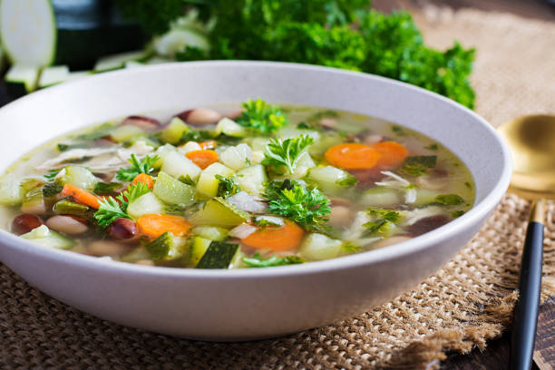

Chicken Soup

This classic chicken soup recipe is perfect for a comforting meal. It's packed with flavor and nutrients.
Ingredients:
- 1 whole chicken
- 2 carrots, chopped
- 2 celery stalks, chopped
- 1 onion, chopped
- 2 cloves garlic, minced
- Salt and pepper to taste
Instructions:
1. In a large pot, cook the chicken until done.
2. Remove the chicken and set aside. Sauté the vegetables in the pot.
3. Shred the chicken and return to the pot.
4. Simmer for 30 minutes. Season with salt and pepper.
Vegetable Soup
A hearty vegetable soup that’s both healthy and delicious. Great for any time of the year!
Ingredients:
- 1 onion, chopped
- 2 carrots, chopped
- 2 potatoes, diced
- 1 cup green beans
- 4 cups vegetable broth
- Salt and pepper to taste
Instructions:
1. Sauté the onion and carrots until soft.
2. Add the potatoes, green beans, and broth.
3. Simmer until vegetables are tender. Season with salt and pepper.
Lentil Soup
This lentil soup is full of rich flavors and is packed with protein. Perfect for a filling meal!
Ingredients:
- 1 cup lentils
- 1 onion, chopped
- 2 garlic cloves, minced
- 2 carrots, chopped
- 4 cups vegetable broth
- 1 can diced tomatoes
- Salt and pepper to taste
Instructions:
1. Sauté the onion, garlic, and carrots until soft.
2. Add the lentils, broth, and tomatoes.
3. Simmer until lentils are tender. Season with salt and pepper.